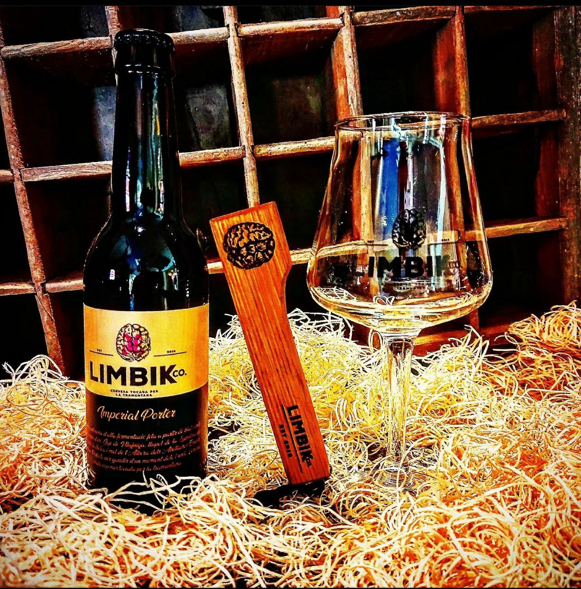
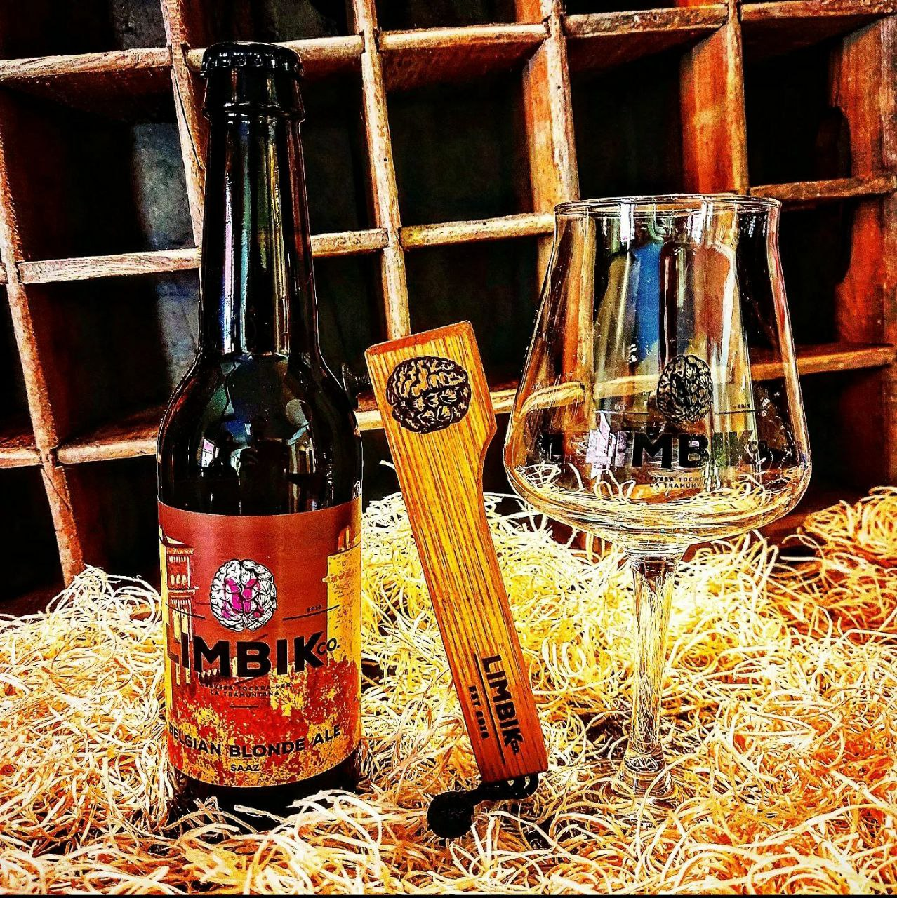
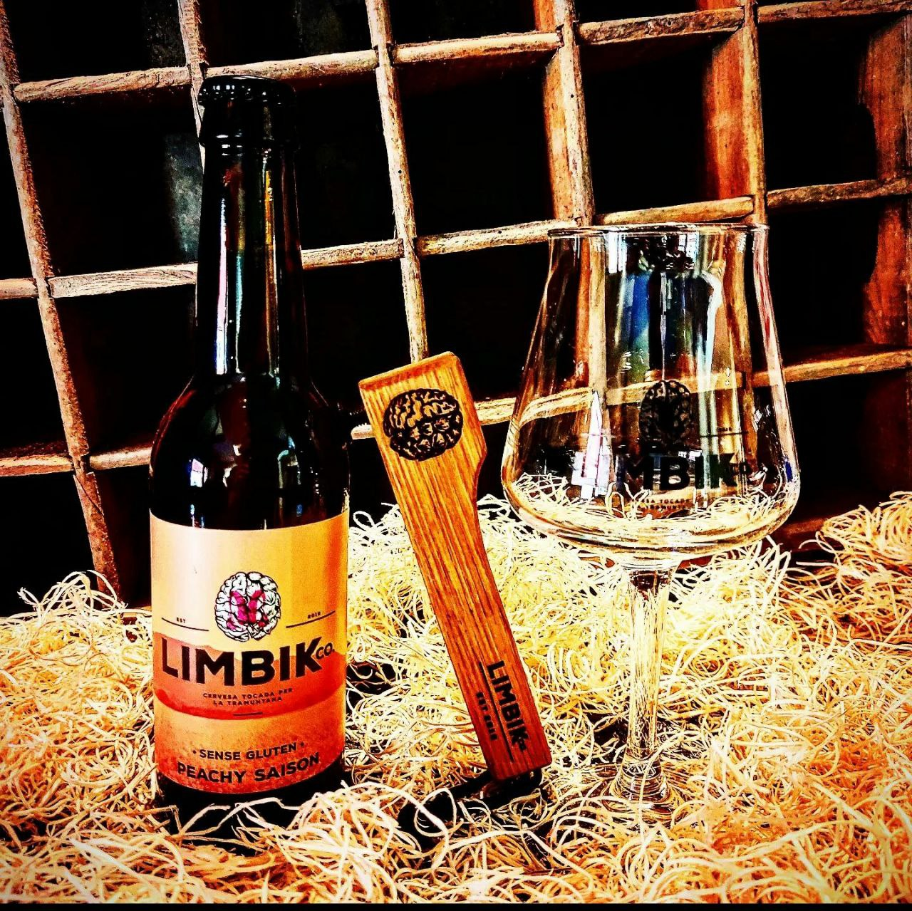
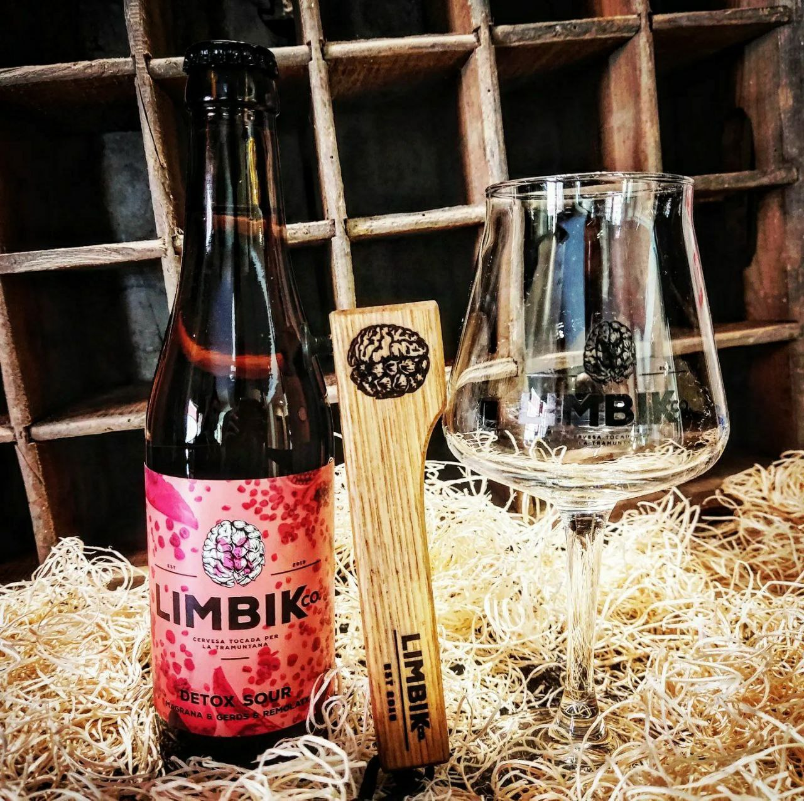
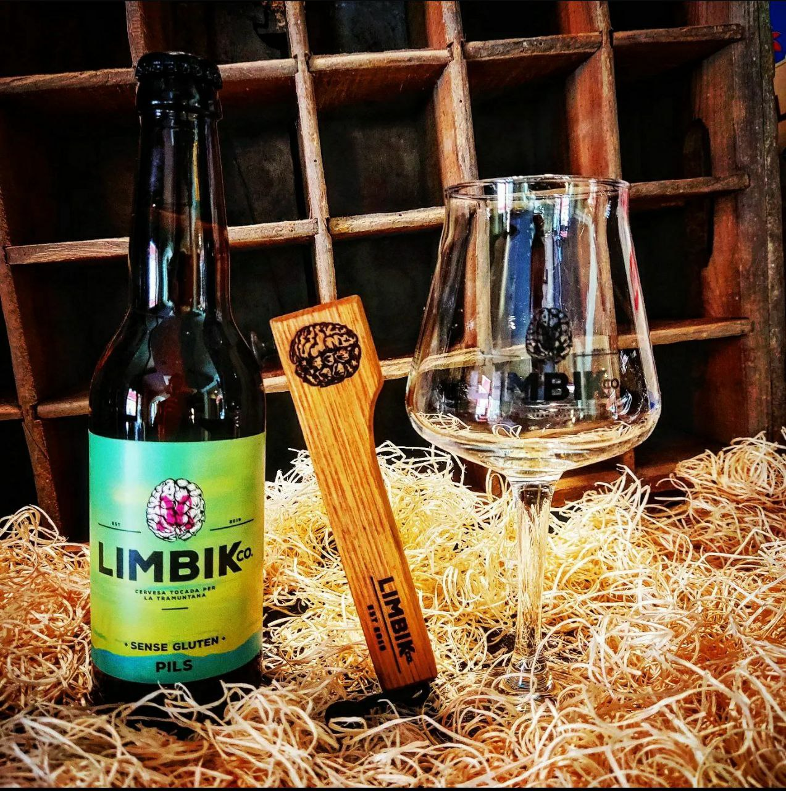
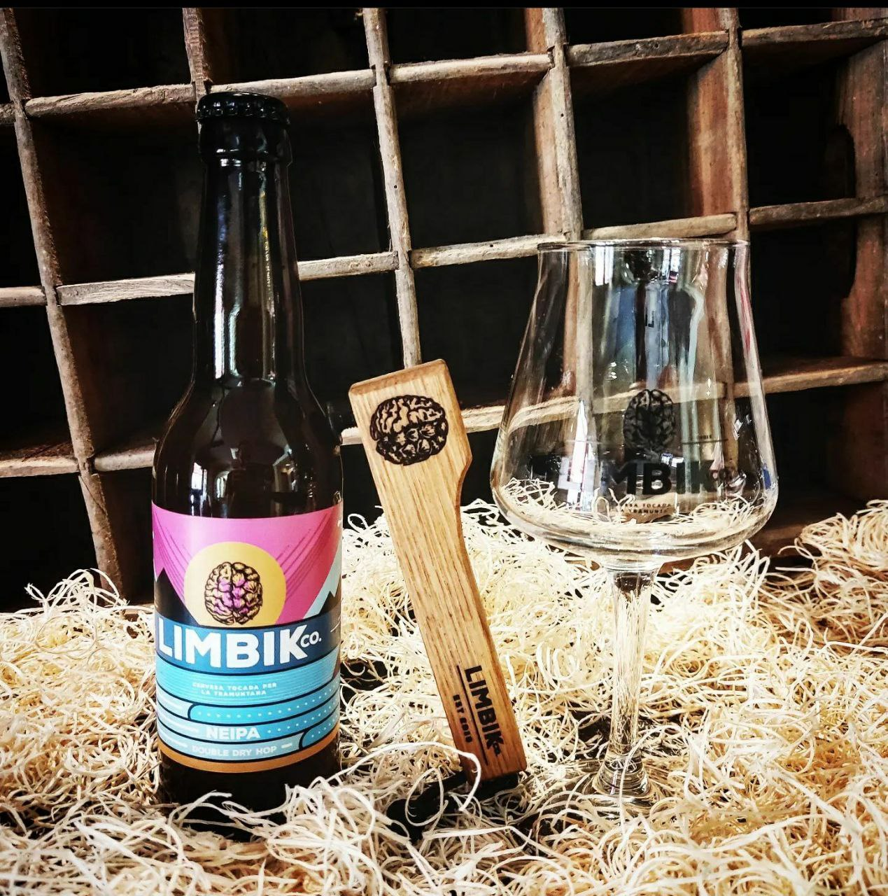
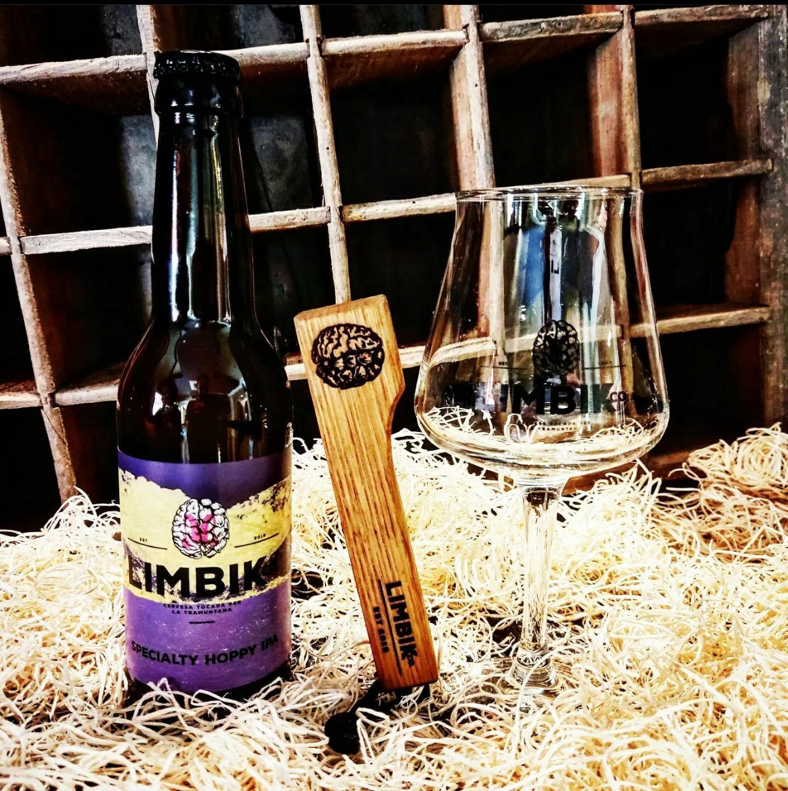
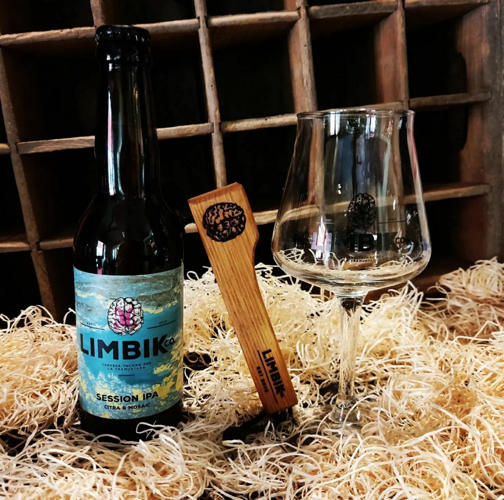
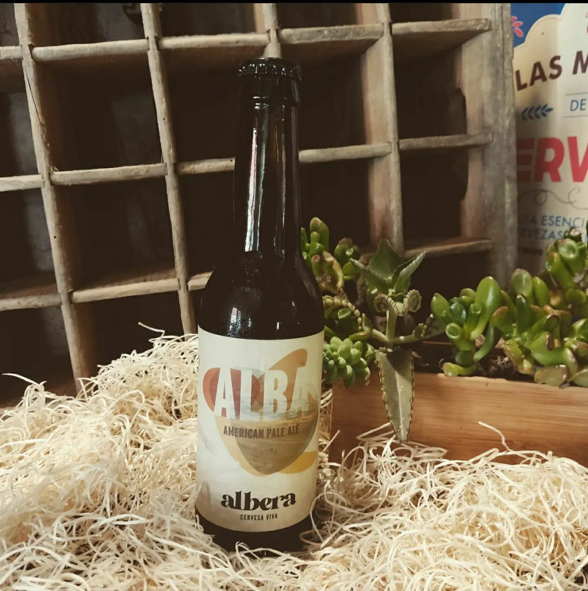

-
Imperial porter
Una cervesa negra molt nostra. Un homenatge als productors locals, amb un 10% de blat i ordi sense maltejar dels camps d'en Jep de Vilajuïga, mel de l'Albera dels Abellaires Empordanesos. de Garriguella i llúpol ecològic de la Lúpulina, d'en Jordi de Cassà de la Selva. Una cervesa amb caràcter, madurada un mínim de 4 mesos amb fusta de roure americà. La més densa de la familia, és ideal per beure sense pressa i degustar els sabors matisos que ens deixa, com els de vainilla, xocolata negra, cafe, toffee o mel. La Imperial Porter és el nostre postre més llaminer. I com a novetat, portem dues Imperial Porter madurades durant 12 mesos en barriques de Bourbon i de Garnatxa Dolça!
Price
-
Belgian blonde ale
La Belgian Blonde Ale és el segell de Limbik, inspirat en el temps viscut a Bèlgica. Una cervesa dolceta, rossa i rodona. Molt adient pels amants de les cerveses d'abadia, feta amb l'estil tradicional centenari dels monjos d'aquest petit gran pais: Amb una maduració minima de 3 mesos, en aquesta cervesa predominen les maltes caramel·litzades i els èsters, ja que la fermentació li dóna un toc floral. Una cervesa per beure-la amb calma i gaudir dels matisos que aporta el llevat 'Abbaye.
Price
-
Peache saison
La nostra segona Saison sense gluten és afruitada, fresca i brillant. És una de les nostres noves cerveses de temporada. L'estil Saison té una història de més d'un segle. Provinent del nord de França, és una cervesa lleugera i amb un pas per la boca molt fresc. Està feta amb producte local empordanès, i és que la seva dolçor prové dels 100 kg de préssecs de Terrades. Degusta-la i deixa't emportar per la seva lleugeresa (menys de 25 kcal per ml) les notes a préssec.
Price
-
Detox sour
Una cervesa interessant per a qui vulgui fer un pas més enllà en el món de les artesanes. Amb aquest objectiu hem cuinat la nostra segona cervesa de fermentació mixta, amb 150 kg de magranes, 10 kg de gerds i 20 kg de remolatxa. Tota aquesta fruita local premsada i fermentada en fred fa que la Detox Sour sigui una cervesa per a pair. Si, si! Com ho sents: la nostra nova Limbik té propietats antioxidants i depuratives. És una cervesa lleugera i vermellosa, que combina a la perfecció l'acidesa del ferment amb la dolçor de la fruita.
Price
-
Pils. Sense Gluten
Feia temps que teníem ganes de fer una Lager. Una cervesa de baixa fermentació, molt fina, molt subtil, molt bevible i d'on se'n podran beure litres sense parar. Els seus 4,8° no seran un problema sinó tot el contrari. Hem utilitzat el llúpol Saaz, que tant ens agrada, pel seu sabor. elegant. D'aparença molt transparent, intentant trobar un color palla clar. Volíem ampliar la familia de les "Sense Gluten" i hem pensat que seria un bon estil de cervesa per abraçar al máxim nombre de gent i no deixar enrere a ningú. Considerem que és la cervesa ideal per gaudir en qualsevol moment i alhora, immortalitzar l'instant tan agradable sense buscar sabors colossals ni astronòmics, sinó la finor i l'elegància.
Price
-
Neipa
Una bomba de llúpol pels amants dels aromes afruitats. Amb maltes clares i presència de flocs de civada. ordi i blat, aquesta cervesa és clar 8/16 tèrbola, i deixa una sensació agradabi a cada glop. La NEIPA és un estil molt reconegut als Estats Units, d'on en són originàries. Les edicions fetes amb la tècnica de fred directe al fermentador (20 g/L) fa que guanyi en potents aromes i gustos. Etiqueta feta a mà, col·laboració amb Nohakota Slideboards.
Price
-
Specialty hoppy IPA
Som amants del llúpol i per això, hem ideat la Specialty Hoppy IPA. Una cervesa polivalent amb un pas per la boca espectacular. El llúpol agafa el paper principal per donar gustos a fruita local com préssec o albercoc, entre d'altres. La seva malta lleugera fa que sigui sedosa i agradable. Entra molt fresca i dolça, accentuant els sabors dels llúpols "Citra" i "El Dorado", fent de la nostra Specialty Hoppy IPA, una cervesa clara però gustosa i gens amarga.
Price
-
Session IPA
La Session IPA és la reina de la casa, la més reproduïda venuda de la familia. Els seus llúpols donen un caràcter aromàtic amb tons de fruites com préssec, pinya o mango, entre d'altres. La combinació d'aromes i la baixa densitat en boca fan que sigui una cervesa ultra bevible, per gaudir-la i escampar-la per tot el cos. S'hi ha treballat amb una presència baixa de malta pàl·lida perquè la tonalitat sigui. molt clara La nostra Session IPA és l'emblema de l'estiu. Idònia per contraatacar la calor per la seva frescor lleugeresa.
Price
-
Albera
L' Alba és una cervesa gastronòmica, aromàticament té una intensa base maltosa, en olorar-la trobaràs aromes de malta, el cereal i el gra. En tastar-la veuràs que és refrescant i suau, també notaràs la lleugera amargor que s'espera en una APA, present però subtil. Molta bona per acompanyar tota classe de menjar. Ideal per aquesta temporada primaveral i el bon temps que s'acosta. Alba, cervesa viva de l'Albera. La pots aconseguir sempre ben freda al SIRAKU, la cerveseria de l'Empordà a Garriguella. Alba, vine a provarla!!
Price